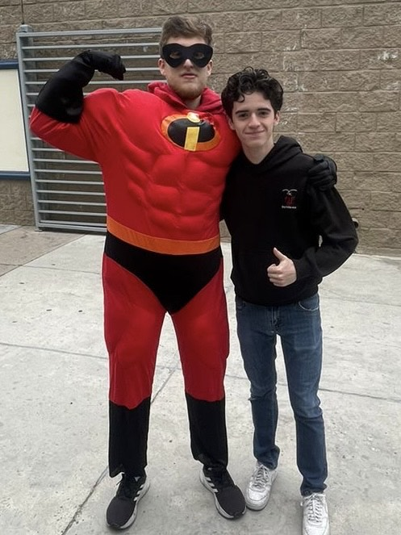

Cesar Ortega
AKA: Wuevo
Edad: 18
Rango: Gigante
Nivel de Poder: 4,000
César, con una habilidad legendaria forjada en las herrerías de la tradición vikinga y una imponente estatura que desafía las alturas, irradia una presencia que fácilmente podría eclipsar incluso los rincones más recónditos de los salones de aseo. Su brillo no reside solo en su destreza física, sino en su habilidad para ser el bastión del orden, la conversación y la cordura en cada reunión. Dotado con un cociente intelectual que supera con creces la norma, César no pasa desapercibido en ninguna clase, ya que su participación activa conlleva a menudo la pérdida de valiosos minutos académicos. Poseedor de un vasto acervo de conocimientos que abarca desde el fútbol hasta los entresijos de la política mundial, su presencia es ubicua, impregnando cada conversación con un aura de erudición. Apasionado por el baloncesto y el fútbol, César encuentra su deleite en la competencia deportiva, siendo un ferviente seguidor del Arsenal, cuyo desempeño en cada torneo lo lleva a experimentar los más profundos tormentos del alma. Además, siente una profunda afinidad por el bullicio y la sofisticación del estado de Miami, donde el glamour y la vitalidad se entrelazan en un fascinante espectáculo.
En el campo de batalla futbolístico, César Ortega se alza majestuoso, una figura titánica entre los mortales que pisan el césped sagrado. Su estatura colosal desafía los límites terrenales, erigiéndose como un coloso inamovible ante los disparos de los delanteros rivales. Su destreza en la custodia del arco es simplemente sobrenatural; cada zambullida en pos del balón parece abarcar la totalidad del firmamento, envolviendo la meta con su envergadura imponente. Pero más allá del verde tapiz del juego, en el santuario del saber, César despliega una presencia igualmente imponente, aunque de naturaleza distinta. No es su altura lo que lo distingue, sino su voz resonante, un trueno intelectual que nunca se silencia. Siempre erguido, con la mano en alto, desafía las fronteras del conocimiento con preguntas aparentemente innecesarias, expandiendo las discusiones hasta límites cósmicos. Para algunos, su voracidad puede resultar excesiva, pero para los ávidos de saber, su inquietud inextinguible es una chispa que enciende la llama del intelecto.
Sin embargo, en el teatro de las relaciones humanas, se teje una trama de tensiones entre César y su fiel amorio, Ángel. La paciencia del gigante de la inteligencia se agota con rapidez ante las provocaciones del astuto Ángel, cuyas palabras ácidas son como flechas que perforan su coraza intelectual. En sus duelos verbales, ambos despliegan estrategias dignas de los más hábiles dialécticos, luchando por imponer su visión del mundo en el campo de la discusión. A pesar de sus desencuentros esporádicos, no se puede ignorar la pasión que comparten, ya sea por el deporte rey o por algún otro secreto que solo el tiempo podrá desvelar. En Resumen, César Ortega es un joven de proporciones colosales, tanto físicas como mentales. Ya sea defendiendo la portería con su presencia majestuosa o desafiando las fronteras del saber con su inquietud insaciable, deja una marca indeleble en el grupo del 602, una estela brillante que perdurará más allá de los confines del tiempo.
602